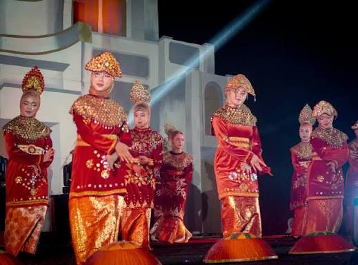
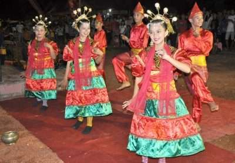
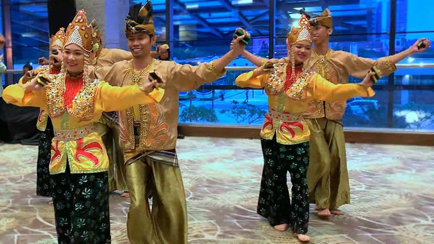
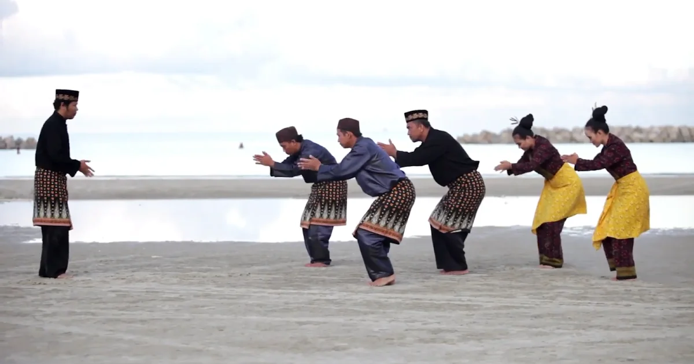
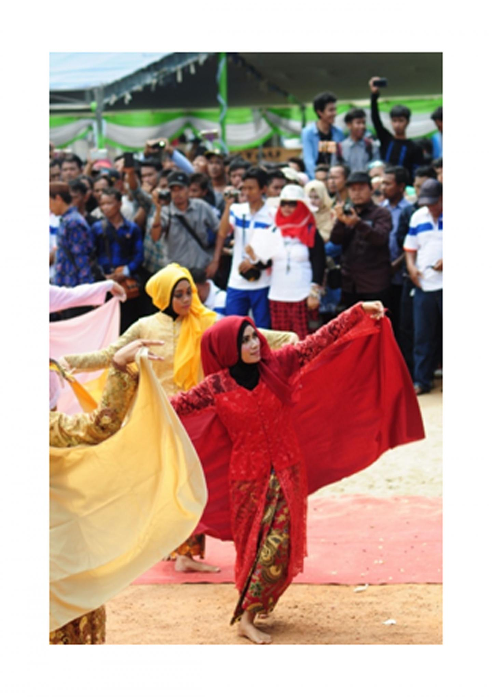

Selamat Datang di Web Tarian Bangka Belitung, website ini berisi berbagai Tarian Bangka Belitung, pesona Tari Bangka Belitung dari negeri serumpun sebalai, gerak dan irama bertutur tentang adat, laut, dan kehidupan masyarakatnya.
Mari menjelajah keindahan tarian daerah yang diwariskan lintas generasi. Tarian daerah Bangka Belitung adalah seni gerak tradisional yang tumbuh dan berkembang di masyarakat Kepulauan Bangka Belitung diiringi musik dan busana khas Melayu, serta mengandung nilai adat, sosial, dan budaya yang diwariskan secara turun-temurun.
Silakan pilih menu di sebelah kiri untuk melihat daftar tarian dan informasi tentang tarian Bangka Belitung.